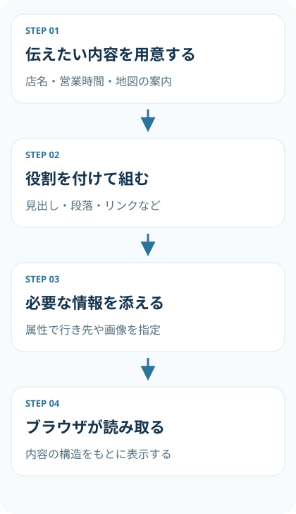

お店のページには、店名、営業時間、地図へのリンクが並んでいます。同じ文字でも、大きな見出しになったり、押すと別のページへ進めたりするのはなぜでしょうか。ブラウザに内容の構造を伝えるHTMLを知ると、その違いが見えてきます。今日は見た目の飾りより先に、情報に役割を付けるところから見てみましょう。
01 — DIGITAL BASICS
HTMLは、内容の構造を表すための言葉
HTMLはHyperText Markup Languageの略で、Webページの内容に構造を与えるマークアップ言語です。マークアップとは、文章などに目印を付けて役割を示すこと。店名を見出しにする、説明を段落にする、といった区切りをブラウザへ伝えます。
たとえば「営業時間」という文字と、その下の「午前から夕方まで営業しています」という説明を考えます。人は見た目や前後関係から役割を読み取れますが、HTMLでも見出しと段落を分けて表せます。文字をただ一列に並べることと、意味のあるまとまりとして組むことは違うのです。
02 — DIGITAL BASICS
タグで囲み、要素としてまとまりを作る
段落を表す例が <p>今日は営業しています。</p> です。<p>という開始タグと</p>という終了タグが、間の文章を段落として扱うよう示します。このまとまりを要素と呼びます。HTMLをブラウザで表示するとき、通常これらのタグ自体を読者へ見せるのではなく、段落として文章を表示します。
見出しにはh1やh2などの要素があり、ページの内容を階層に分けて整理できます。大きい文字にしたいから、という理由だけで見出しを選ぶのではなく、その文章が何の役割を持つかを考えます。すべての要素に同じ形の終了タグが必要というわけではなく、画像を扱うimgのような例外もあります。

03 — DIGITAL BASICS
リンクや画像には、追加の情報も付く
地図のページへ移るリンクには、リンクとしての役割だけでなく、移動先の情報が必要です。aという要素の開始タグにhrefという属性を付けて、行き先のURLを指定できます。属性は、要素に追加の条件や情報を与えるものです。読者に見える文字と、hrefに入るURLは別々に指定します。
画像を表示するimg要素では、src属性で画像の場所を指定します。画像の代わりに内容を伝えるためのalt属性もあります。こうした情報があることで、ページに画像を組み込んだり、画像を見られない状況で内容を伝えたりできます。タグの名前を暗記する前に、「役割」と「必要な追加情報」の組み合わせとして眺めてみましょう。
04 — DIGITAL BASICS
HTMLの役割と、見た目を整える役割を分けよう
ブラウザはHTMLを読み取り、見出しや段落などの関係をもとにページを表示します。文字の色や余白などの見た目にはCSS、操作に応じた処理にはJavaScriptが関わることがあります。これらが組み合わさって、いつものページができています。
HTMLだけを変えることと、通信先を変えることも別の話です。同じURLでも内容を作り直せますし、同じHTMLを使っても画面幅などで見た目は変わり得ます。まずはページの中にある情報を「見出し」「説明」「リンク」「画像」と分けてみる。その役割をブラウザへ伝える一つの土台がHTMLです。
REMEMBER
今日覚えておきたい3つのこと
- 01
HTMLは、Webページの内容と構造を表すマークアップ言語。
- 02
要素は役割のまとまり、属性は追加の情報を表す。
- 03
構造・見た目・操作を分けると、ページの仕組みを整理できる。
参考資料・情報確認日
情報確認日：2026年11月27日。通信の基本を理解するために一部を簡略化しています。